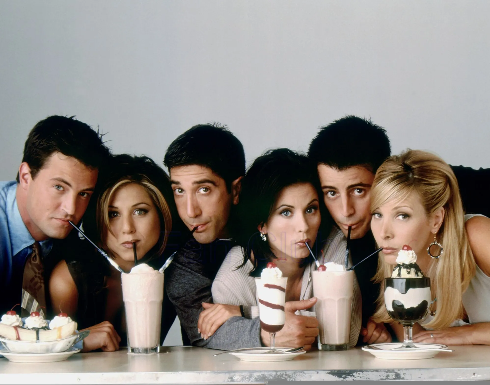

It sucks! You're gonna love it.

Friends é uma sitcom americana criada por David Crane e Marta Kauffman e apresentada pela rede de televisão NBC entre 22 de setembro de 1994 e 6 de maio de 2004, com um total de 10 temporadas, divididas em 236 episódios. A série girava em torno de um grupo de amigos que vivia no bairro de Greenwich Village, na ilha de Manhattan, na cidade de Nova York. Os seis jovens são unidos por laços familiares, românticos e, principalmente, por uma forte amizade, enquanto buscam seus próprios caminhos. Rachel, a garota mimada, deixa o noivo no altar para se juntar à sua antiga amiga de escola, Monica, que é organizada e apaixonada por culinária. Monica é irmã de Ross, um paleontólogo que foi abandonado pela esposa ao descobrir que ela é lésbica. Do outro lado do corredor, moram Joey, um ator em busca de sucesso, e Chandler, cuja profissão é um mistério. Completando o grupo, temos a excêntrica Phoebe, sempre trazendo um toque de originalidade.
Conheça os 6 amigos que conquistaram o mundo!
Opinião da desenvolvedora
Friends é, sem dúvida, uma das melhores séries já criadas. Com uma combinação perfeita de humor, personagens inesquecíveis e histórias envolventes, a série te conquista desde o primeiro episódio e mantém você preso até o último. Não importa quantas vezes eu reassista, esse grupo de amigos continua sendo o meu refúgio nos dias difíceis. Se você ainda não assistiu, está perdendo a chance de conhecer o verdadeiro significado de uma série icônica. Mas, claro, essa é apenas a minha opinião.
Vamos jogar?
Responda as perguntas e descubra qual personagem de Friends você é!
